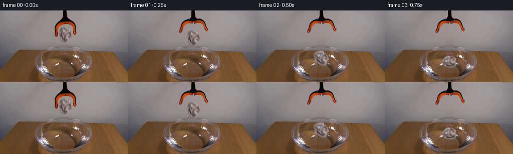
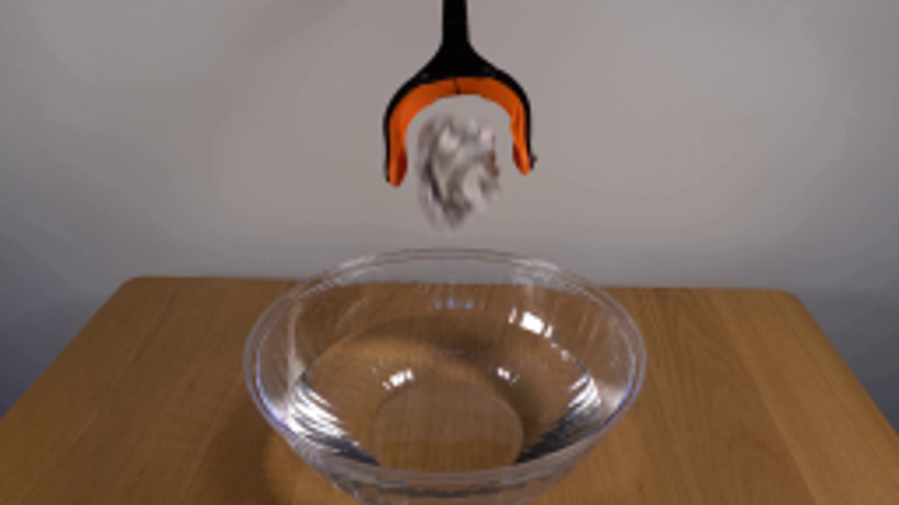
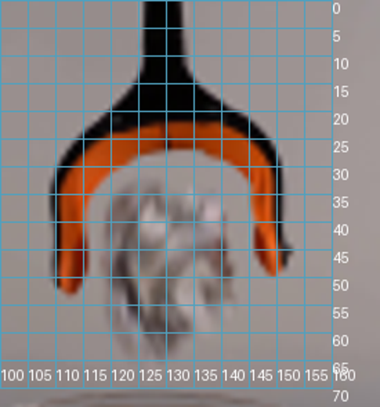
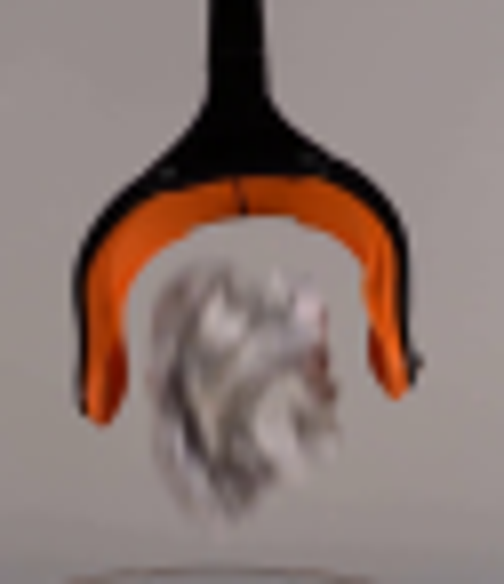
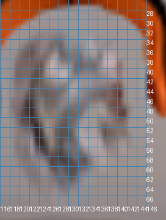
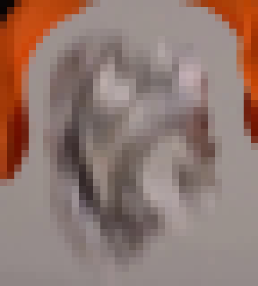
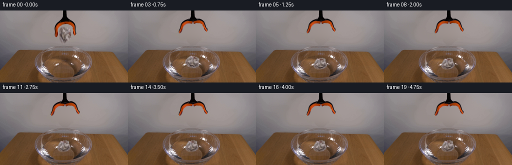
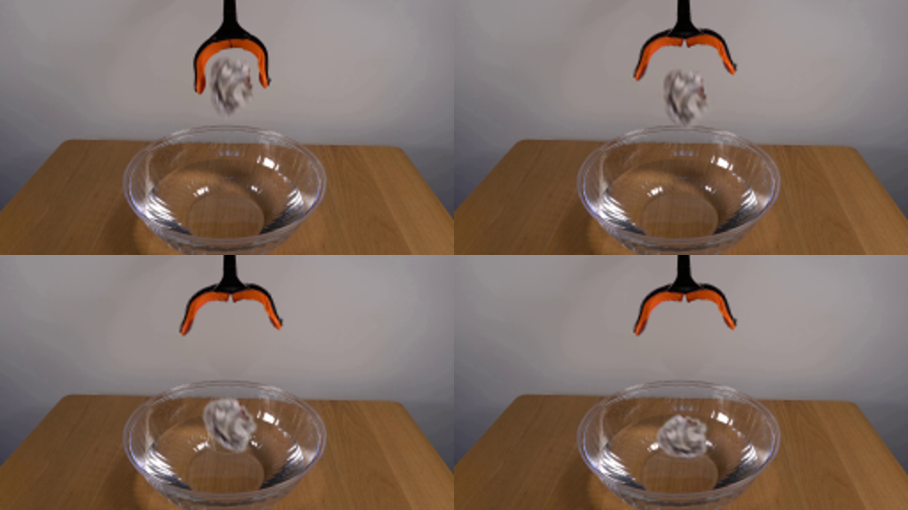

CODING AGENTS AS PIXEL WORLD MODELS
traex/GPT-6.1-Sol · 0134
点击播放 · 原生 RGB 像素
此结果可播放，但该运行尚未通过最终提交审核。页面展示不代表评测通过。
逐轮保存的候选
回放视频、检查图与代码变化。
每份候选均可单独播放。实际图片检查记录在下方工具轨迹中。
候选 01播放与检查图
点击播放 · 原生 RGB 像素


展开代码变化
--- 上一保存版本
+++ 本次保存版本
@@ -0,0 +1,179 @@
+from pathlib import Path
+import numpy as np
+import cv2
+from PIL import Image, ImageDraw
+from scipy.ndimage import gaussian_filter
+import artifact_io
+
+ROOT=Path(__file__).resolve().parent
+W,H=256,144
+S=4
+
+def polygon(points, blur=0):
+ m=Image.new('L',(W*S,H*S));ImageDraw.Draw(m).polygon([(round(x*S),round(y*S)) for x,y in points],fill=255)
+ a=np.asarray(m,dtype=np.float32)/255
+ a=cv2.resize(a,(W,H),interpolation=cv2.INTER_AREA)
+ if blur:a=gaussian_filter(a,blur)
+ return a
+
+def affine_layer(rgb, alpha, pivot, center, angle=0,sx=1,sy=1):
+ a=np.deg2rad(angle);c,s=np.cos(a),np.sin(a)
+ rot=np.array([[c*sx,-s*sy],[s*sx,c*sy]],dtype=np.float32)
+ trans=np.array(center)-rot@np.array(pivot)
+ M=np.concatenate([rot,trans[:,None]],axis=1).astype(np.float32)
+ # The premultiplied sampling avoids grey contours from the wall.
+ am=cv2.warpAffine(alpha,M,(W,H),flags=cv2.INTER_CUBIC,borderMode=cv2.BORDER_CONSTANT)
+ prem=cv2.warpAffine(rgb*alpha[...,None],M,(W,H),flags=cv2.INTER_CUBIC,borderMode=cv2.BORDER_CONSTANT)
+ am=np.clip(am,0,1)
+ col=prem/np.maximum(am[...,None],1e-5)
+ return np.clip(col,0,255),am
+
+def over(im,col,a):return im*(1-a[...,None])+col*a[...,None]
+
+def build_assets(original):
+ y,x=np.mgrid[:H,:W].astype(np.float32)
+ tool_poly=[(125,-2),(134,-2),(134,9),(136,13),(141,17),(146,21),(150,26),(152,31),(153,40),(153,43),(155,45),(153,48),(152,50),(149,51),(147,48),(146,43),(145,35),(142,31),(138,28),(133,27),(128,27),(123,28),(119,30),(117,33),(115,37),(115,45),(115,49),(113,53),(110,54),(108,51),(108,43),(108,36),(109,31),(111,27),(114,23),(119,19),(123,15),(125,11)]
+ paper_poly=[(123,32),(126,31),(129,32),(132,32),(134,33),(137,34),(139,35),(140,38),(140,40),(142,42),(142,46),(144,49),(143,52),(144,55),(142,58),(139,58),(137,61),(135,62),(133,65),(131,66),(128,65),(126,63),(123,61),(121,58),(120,55),(119,52),(118,49),(117,45),(118,41),(118,38),(120,35),(121,33)]
+ pm=polygon(paper_poly,.72)
+ tm=polygon(tool_poly,.6)
+ # Reconstruct only the featureless wall behind the suspended objects,
+ # by a low-order local illumination fit to unobscured wall pixels.
+ removal=np.maximum(pm,tm)
+ removal=cv2.dilate(removal,np.ones((7,7),np.uint8))
+ samples=(x>92)&(x<170)&(y<73)&(removal<.005)
+ xx=(x-130)/40; yy=(y-38)/40
+ terms=np.stack([np.ones_like(x),xx,yy,xx*xx,xx*yy,yy*yy,xx**3,xx*xx*yy,xx*yy*yy,yy**3],axis=-1)
+ coeff=np.linalg.lstsq(terms[samples],original[samples],rcond=None)[0]
+ wall=np.clip(terms@coeff,0,255)
+ cleanup=gaussian_filter(removal, .7)
+ bg=over(original,wall,np.clip(cleanup*1.2,0,1))
+ # Color matting against the fitted wall for orange rubber and black steel.
+ black=(wall[...,0]-original[...,0])/110
+ orange=((original[...,0]-original[...,2])-(wall[...,0]-wall[...,2]))/145
+ matte=np.clip(np.maximum(black,orange),0,1)
+ # Retain the solid centers but keep subpixel antialiasing at the silhouette.
+ matte=np.clip(matte*1.20,0,1)*np.clip(tm*1.12,0,1)
+ tool_rgb=np.clip((original-wall*(1-matte[...,None]))/np.maximum(matte[...,None],.01),0,255)
+ paper_rgb=np.clip((original-wall*(1-pm[...,None]))/np.maximum(pm[...,None],.01),0,255)
+ return bg,wall,tool_rgb,matte,paper_rgb,pm
+
+
+def water_warp(bg,time):
+ if time<=0:return bg.copy()
+ y,x=np.mgrid[:H,:W].astype(np.float32)
+ dx=x-128;dy=(y-109)/.42
+ r=np.sqrt(dx*dx+dy*dy)+1e-4
+ radius=6+42*time
+ amp=1.6*np.exp(-time*1.5)
+ wave=np.exp(-((r-radius)/6)**2)*np.sin((r-radius)*.90)
+ wave+=.5*np.exp(-((r-radius+11)/5)**2)*np.sin((r-radius+11)*1.0)
+ edge=np.clip((1-((x-127)/49)**2-((y-108)/23)**2)*5,0,1)
+ delta=amp*wave*edge
+ mx=(x+delta*dx/r*.55).astype(np.float32)
+ my=(y+delta*dy/r*.42).astype(np.float32)
+ distorted=cv2.remap(bg,mx,my,cv2.INTER_CUBIC,borderMode=cv2.BORDER_REFLECT)
+ return distorted
+
+
+def ripple_overlay(time):
+ rgba=Image.new('RGBA',(W*S,H*S));d=ImageDraw.Draw(rgba)
+ if time<=0:return np.zeros((H,W,4),np.float32)
+ for k in range(3):
+ r=6+41*time-7*k
+ if r<=2 or r>54:continue
+ a=int(48*np.exp(-time*1.65)*(1-.20*k))
+ if a<1:continue
+ cx=128;cy=109
+ box=((cx-r)*S,(cy-.39*r)*S,(cx+r)*S,(cy+.39*r)*S)
+ # Alternating slight highlights/shadows give small clear water waves.
+ d.arc(box,7,171,fill=(224,229,229,a),width=2)
+ d.arc(box,183,343,fill=(224,229,232,int(a*.6)),width=2)
+ box2=((cx-r)*S,(cy-.39*r+.5)*S,(cx+r)*S,(cy+.39*r+.5)*S)
+ d.arc(box2,15,164,fill=(62,58,52,int(a*.65)),width=2)
+ out=np.asarray(rgba.resize((W,H),Image.Resampling.LANCZOS),np.float32)
+ yy,xx=np.mgrid[:H,:W]
+ bound=np.clip((1-((xx-127)/49)**2-((yy-108)/23)**2)*6,0,1)
+ out[...,3]*=bound
+ return out
+
+
+def splash_overlay(t):
+ canvas=Image.new('RGBA',(W*S,H*S));d=ImageDraw.Draw(canvas)
+ if not (0<t<.34):return np.asarray(canvas.resize((W,H)),np.float32)
+ strength=np.exp(-t*6)
+ def pts(ps):return [(x*S,y*S) for x,y in ps]
+ # A light, low-energy splash: a thin rising water sheet with irregular tips.
+ for side in [-1,1]:
+ x=128+side*(8+22*t)
+ height=7*np.sin(min(t/.3,1)*np.pi)
+ ps=[(x-side*3,110),(x-side*1,106-height*.7),(x+side*1,104-height),(x+side*2,108-height*.3),(x+side*5,110)]
+ d.polygon(pts(ps),fill=(182,182,173,int(46*strength)))
+ d.line(pts(ps[:-1]),fill=(235,234,224,int(105*strength)),width=2)
+ for k in range(7):
+ side=-1 if k%2 else 1
+ xx=128+side*(9+k*.9+16*t)
+ yy=107-(5+k*.6)*np.sin(np.pi*min(t/.36,1))
+ rx=.40+(.10 if k%3==0 else 0)
+ d.ellipse(((xx-rx)*S,(yy-.7)*S,(xx+rx)*S,(yy+.7)*S),fill=(216,218,211,int(150*strength)))
+ return np.asarray(canvas.resize((W,H),Image.Resampling.LANCZOS),np.float32)
+
+
+def generate():
+ original=np.asarray(Image.open(ROOT/'first_frame.png').convert('RGB'),dtype=np.float32)
+ bg,wall,tool,ta,paper,pa=build_assets(original)
+ # Split the moving rubber-lined fingers at the central hinge. The shaft
+ # remains suspended and motionless throughout the demonstration.
+ yy,xx=np.mgrid[:H,:W]
+ move=np.clip((yy-17.5)/3,0,1)
+ left=ta*move*(xx<130)
+ right=ta*move*(xx>=130)
+ stem=ta*(1-move)
+ impact=.438
+ frames=[original.astype(np.uint8)]
+ for i in range(1,20):
+ t=i/4;dt=t-impact
+ im=water_warp(bg,dt)
+ opening=19*np.clip(t/.24,0,1)
+ for alpha,ang in [(left,opening),(right,-opening)]:
+ col,a=affine_layer(tool,alpha,(130,21),(130,21),angle=ang)
+ im=over(im,col,a)
+ im=over(im,tool,stem)
+ if t<impact:
+ falling=max(0,t-.13)
+ cx=130-.8*falling
+ cy=47+450*falling**2
+ angle=-11*falling/.308
+ sx=sy=1
+ else:
+ # Water abruptly arrests the vertical fall; the buoyant crumpled
+ # sheet tips over, rocks once and remains at the surface.
+ u=max(0,dt)
+ relax=1-np.exp(-u/0.23)
+ cx=129-1.8*(1-np.exp(-u/.8))+.35*np.sin(3*u)*np.exp(-u/2)
+ cy=90+16*relax + 1.6*np.sin(9*u)*np.exp(-u/1.2)
+ angle=-11-63*relax+4*np.sin(7*u)*np.exp(-u/1.5)
+ sx=1-.06*relax
+ sy=1-.24*relax-.045*(1-np.exp(-u/3))
+ col,a=affine_layer(paper,pa,(130,47),(cx,cy),angle,sx,sy)
+ # Contact shadow in the transparent water, not on the background wall.
+ if dt>0:
+ shadow=np.exp(-(((xx-cx)/16)**2+((yy-113)/4)**2)*2)*.13
+ im=over(im,np.array([73,62,44],dtype=np.float32),shadow)
+ # The wetted lower folds are seen through clear water and become
+ # slightly less opaque/darker than the dry creases above.
+ waterline=113+.45*np.sin((xx-cx)*.32+dt*4)*np.exp(-dt)
+ depth=np.clip(yy-waterline,0,10)
+ opacity=np.exp(-depth*.16)
+ wet=np.clip((yy-110)/9,0,1)*(1-np.exp(-dt/.8))
+ col=col*(1-wet[...,None]*.22)+np.array([105,92,74])[None,None,:]*wet[...,None]*.22
+ a=a*opacity
+ im=over(im,col,a)
+ if dt>0:
+ spl=splash_overlay(dt);im=over(im,spl[...,:3],spl[...,3]/255)
+ rip=ripple_overlay(dt);im=over(im,rip[...,:3],rip[...,3]/255)
+ frames.append(np.clip(np.rint(im),0,255).astype(np.uint8))
+ return np.stack(frames)
+
+if __name__=='__main__':
+ frames=generate()
+ artifact_io.save(frames,ROOT)
可观测工具轨迹
实际执行的命令与返回图片。
命令 1exit 0
/bin/bash -lc 'ls -la && cat prompt.txt && cat GENERATION_RULES.md'
命令 2exit 0
/bin/bash -lc "cat artifact_io.py && python - <<'PY'
from PIL import Image
im=Image.open('first_frame.png'); print(im.size); im.resize((1024,576)).save('.tmp/enlarged.png')
PY"命令 3exit 0
/bin/bash -lc "python - <<'PY'
import importlib.util
for n in ['cv2','scipy','numpy','PIL']:
print(n, bool(importlib.util.find_spec(n)))
from PIL import Image
im=Image.open('first_frame.png'); im.crop((100,0,163,73)).resize((504,584)).save('.tmp/object.png')
PY"命令 4exit 0
/bin/bash -lc "python - <<'PY'
from PIL import Image, ImageDraw
im=Image.open('first_frame.png').resize((1024,576)); d=ImageDraw.Draw(im)
for x in range(100,161,5):
d.line((x*4,0,x*4,280),fill=(80,160,190),width=1);d.text((x*4,265),str(x),fill='white')
for y in range(0,71,5):
d.line((400,y*4,640,y*4),fill=(80,160,190),width=1);d.text((641,y*4),str(y),fill='white')
im.crop((400,0,675,294)).resize((550,588)).save('.tmp/grid.png')
PY"命令 5exit 0
/bin/bash -lc "python - <<'PY'
from PIL import Image,ImageDraw
im=Image.open('first_frame.png').resize((2048,1152));d=ImageDraw.Draw(im)
for x in range(116,147,2):
d.line((x*8,26*8,x*8,68*8),fill=(60,130,180),width=1);d.text((x*8,68*8),str(x),fill='white')
for y in range(28,68,2):
d.line((116*8,y*8,146*8,y*8),fill=(60,130,180),width=1);d.text((146*8,y*8),str(y),fill='white')
im.crop((116*8,26*8,150*8,71*8)).save('.tmp/papergrid.png')
PY"命令 6exit 0
/bin/bash -lc "python - <<'PY'
from PIL import Image
im=Image.open('first_frame.png'); im.crop((112,28,148,68)).resize((432,480),Image.Resampling.NEAREST).save('.tmp/nearest.png')
PY"命令 7exit 0
/bin/bash -lc "cat > generate.py <<'PY'
from pathlib import Path
import numpy as np
import cv2
from PIL import Image, ImageDraw
from scipy.ndimage import gaussian_filter
import artifact_io
ROOT=Path(__file__).resolve().parent
W,H=256,144
S=4
def polygon(points, blur=0):
m=Image.new('L',(W*S,H*S));ImageDraw.Draw(m).polygon([(round(x*S),round(y*S)) for x,y in points],fill=255)
a=np.asarray(m,dtype=np.float32)/255
a=cv2.resize(a,(W,H),interpolation=cv2.INTER_AREA)
if blur:a=gaussian_filter(a,blur)
return a
def affine_layer(rgb, alpha, pivot, center, angle=0,sx=1,sy=1):
a=np.deg2rad(angle);c,s=np.cos(a),np.sin(a)
rot=np.array([[c*sx,-s*sy],[s*sx,c*sy]],dtype=np.float32)
trans=np.array(center)-rot@np.array(pivot)
M=np.concatenate([rot,trans[:,None]],axis=1).astype(np.float32)
# The premultiplied sampling avoids grey contours from the wall.
am=cv2.warpAffine(alpha,M,(W,H),flags=cv2.INTER_CUBIC,borderMode=cv2.BORDER_CONSTANT)
prem=cv2.warpAffine(rgb*alpha[...,None],M,(W,H),flags=cv2.INTER_CUBIC,borderMode=cv2.BORDER_CONSTANT)
am=np.clip(am,0,1)
col=prem/np.maximum(am[...,None],1e-5)
return np.clip(col,0,255),am
def over(im,col,a):return im*(1-a[...,None])+col*a[...,None]
def build_assets(original):
y,x=np.mgrid[:H,:W].astype(np.float32)
tool_poly=[(125,-2),(134,-2),(134,9),(136,13),(141,17),(146,21),(150,26),(152,31),(153,40),(153,43),(155,45),(153,48),(152,50),(149,51),(147,48),(146,43),(145,35),(142,31),(138,28),(133,27),(128,27),(123,28),(119,30),(117,33),(115,37),(115,45),(115,49),(113,53),(110,54),(108,51),(108,43),(108,36),(109,31),(111,27),(114,23),(119,19),(123,15),(125,11)]
paper_poly=[(123,32),(126,31),(129,32),(132,32),(134,33),(137,34),(139,35),(140,38),(140,40),(142,42),(142,46),(144,49),(143,52),(144,55),(142,58),(139,58),(137,61),(135,62),(133,65),(131,66),(128,65),(126,63),(123,61),(121,58),(120,55),(119,52),(118,49),(117,45),(118,41),(118,38),(120,35),(121,33)]
pm=polygon(paper_poly,.72)
tm=polygon(tool_poly,.6)
# Reconstruct only the featureless wall behind the suspended objects,
# by a low-order local illumination fit to unobscured wall pixels.
removal=np.maximum(pm,tm)
removal=cv2.dilate(removal,np.ones((7,7),np.uint8))
samples=(x>92)&(x<170)&(y<73)&(removal<.005)
xx=(x-130)/40; yy=(y-38)/40
terms=np.stack([np.ones_like(x),xx,yy,xx*xx,xx*yy,yy*yy,xx**3,xx*xx*yy,xx*yy*yy,yy**3],axis=-1)
coeff=np.linalg.lstsq(terms[samples],original[samples],rcond=None)[0]
wall=np.clip(terms@coeff,0,255)
cleanup=gaussian_filter(removal, .7)
bg=over(original,wall,np.clip(cleanup*1.2,0,1))
# Color matting against the fitted wall for orange rubber and black steel.
black=(wall[...,0]-original[...,0])/110
orange=((original[...,0]-original[...,2])-(wall[...,0]-wall[...,2]))/145
matte=np.clip(np.maximum(black,orange),0,1)
# Retain the solid centers but keep subpixel antialiasing at the silhouette.
matte=np.clip(matte*1.20,0,1)*np.clip(tm*1.12,0,1)
tool_rgb=np.clip((original-wall*(1-matte[...,None]))/np.maximum(matte[...,None],.01),0,255)
paper_rgb=np.clip((original-wall*(1-pm[...,None]))/np.maximum(pm[...,None],.01),0,255)
return bg,wall,tool_rgb,matte,paper_rgb,pm
def water_warp(bg,time):
if time<=0:return bg.copy()
y,x=np.mgrid[:H,:W].astype(np.float32)
dx=x-128;dy=(y-109)/.42
r=np.sqrt(dx*dx+dy*dy)+1e-4
radius=6+42*time
amp=1.6*np.exp(-time*1.5)
wave=np.exp(-((r-radius)/6)**2)*np.sin((r-radius)*.90)
wave+=.5*np.exp(-((r-radius+11)/5)**2)*np.sin((r-radius+11)*1.0)
edge=np.clip((1-((x-127)/49)**2-((y-108)/23)**2)*5,0,1)
delta=amp*wave*edge
mx=(x+delta*dx/r*.55).astype(np.float32)
my=(y+delta*dy/r*.42).astype(np.float32)
distorted=cv2.remap(bg,mx,my,cv2.INTER_CUBIC,borderMode=cv2.BORDER_REFLECT)
return distorted
def ripple_overlay(time):
rgba=Image.new('RGBA',(W*S,H*S));d=ImageDraw.Draw(rgba)
if time<=0:return np.zeros((H,W,4),np.float32)
for k in range(3):
r=6+41*time-7*k
if r<=2 or r>54:continue
a=int(48*np.exp(-time*1.65)*(1-.20*k))
if a<1:continue
cx=128;cy=109
box=((cx-r)*S,(cy-.39*r)*S,(cx+r)*S,(cy+.39*r)*S)
# Alternating slight highlights/shadows give small clear water waves.
d.arc(box,7,171,fill=(224,229,229,a),width=2)
d.arc(box,183,343,fill=(224,229,232,int(a*.6)),width=2)
box2=((cx-r)*S,(cy-.39*r+.5)*S,(cx+r)*S,(cy+.39*r+.5)*S)
d.arc(box2,15,164,fill=(62,58,52,int(a*.65)),width=2)
out=np.asarray(rgba.resize((W,H),Image.Resampling.LANCZOS),np.float32)
yy,xx=np.mgrid[:H,:W]
bound=np.clip((1-((xx-127)/49)**2-((yy-108)/23)**2)*6,0,1)
out[...,3]*=bound
return out
def splash_overlay(t):
canvas=Image.new('RGBA',(W*S,H*S));d=ImageDraw.Draw(canvas)
if not (0<t<.34):return np.asarray(canvas.resize((W,H)),np.float32)
strength=np.exp(-t*6)
def pts(ps):return [(x*S,y*S) for x,y in ps]
# A light, low-energy splash: a thin rising water sheet with irregular tips.
for side in [-1,1]:
x=128+side*(8+22*t)
height=7*np.sin(min(t/.3,1)*np.pi)
ps=[(x-side*3,110),(x-side*1,106-height*.7),(x+side*1,104-height),(x+side*2,108-height*.3),(x+side*5,110)]
d.polygon(pts(ps),fill=(182,182,173,int(46*strength)))
d.line(pts(ps[:-1]),fill=(235,234,224,int(105*strength)),width=2)
for k in range(7):
side=-1 if k%2 else 1
xx=128+side*(9+k*.9+16*t)
yy=107-(5+k*.6)*np.sin(np.pi*min(t/.36,1))
rx=.40+(.10 if k%3==0 else 0)
d.ellipse(((xx-rx)*S,(yy-.7)*S,(xx+rx)*S,(yy+.7)*S),fill=(216,218,211,int(150*strength)))
return np.asarray(canvas.resize((W,H),Image.Resampling.LANCZOS),np.float32)
def generate():
original=np.asarray(Image.open(ROOT/'first_frame.png').convert('RGB'),dtype=np.float32)
bg,wall,tool,ta,paper,pa=build_assets(original)
# Split the moving rubber-lined fingers at the central hinge. The shaft
# remains suspended and motionless throughout the demonstration.
yy,xx=np.mgrid[:H,:W]
move=np.clip((yy-17.5)/3,0,1)
left=ta*move*(xx<130)
right=ta*move*(xx>=130)
stem=ta*(1-move)
impact=.438
frames=[original.astype(np.uint8)]
for i in range(1,20):
t=i/4;dt=t-impact
im=water_warp(bg,dt)
opening=19*np.clip(t/.24,0,1)
for alpha,ang in [(left,opening),(right,-opening)]:
col,a=affine_layer(tool,alpha,(130,21),(130,21),angle=ang)
im=over(im,col,a)
im=over(im,tool,stem)
if t<impact:
falling=max(0,t-.13)
cx=130-.8*falling
cy=47+450*falling**2
angle=-11*falling/.308
sx=sy=1
else:
# Water abruptly arrests the vertical fall; the buoyant crumpled
# sheet tips over, rocks once and remains at the surface.
u=max(0,dt)
relax=1-np.exp(-u/0.23)
cx=129-1.8*(1-np.exp(-u/.8))+.35*np.sin(3*u)*np.exp(-u/2)
cy=90+16*relax + 1.6*np.sin(9*u)*np.exp(-u/1.2)
angle=-11-63*relax+4*np.sin(7*u)*np.exp(-u/1.5)
sx=1-.06*relax
sy=1-.24*relax-.045*(1-np.exp(-u/3))
col,a=affine_layer(paper,pa,(130,47),(cx,cy),angle,sx,sy)
# Contact shadow in the transparent water, not on the background wall.
if dt>0:
shadow=np.exp(-(((xx-cx)/16)**2+((yy-113)/4)**2)*2)*.13
im=over(im,np.array([73,62,44],dtype=np.float32),shadow)
# The wetted lower folds are seen through clear water and become
# slightly less opaque/darker than the dry creases above.
waterline=113+.45*np.sin((xx-cx)*.32+dt*4)*np.exp(-dt)
depth=np.clip(yy-waterline,0,10)
opacity=np.exp(-depth*.16)
wet=np.clip((yy-110)/9,0,1)*(1-np.exp(-dt/.8))
col=col*(1-wet[...,None]*.22)+np.array([105,92,74])[None,None,:]*wet[...,None]*.22
a=a*opacity
im=over(im,col,a)
if dt>0:
spl=splash_overlay(dt);im=over(im,spl[...,:3],spl[...,3]/255)
rip=ripple_overlay(dt);im=over(im,rip[...,:3],rip[...,3]/255)
frames.append(np.clip(np.rint(im),0,255).astype(np.uint8))
return np.stack(frames)
if __name__=='__main__':
frames=generate()
artifact_io.save(frames,ROOT)
PY
python generate.py"命令 8exit 0
/bin/bash -lc "python - <<'PY'
from PIL import Image
sheet=Image.new('RGB',(1024,576))
for k in range(4):
im=Image.open(f'frames/{k:02}.png').resize((512,288));sheet.paste(im,((k%2)*512,(k//2)*288))
sheet.save('.tmp/start.png')
PY"视觉工具实际返回图片 1

视觉工具实际返回图片 2

视觉工具实际返回图片 3

视觉工具实际返回图片 4

视觉工具实际返回图片 5

视觉工具实际返回图片 6

视觉工具实际返回图片 7

保存候选 1 份；完成命令 8 次；可验证图片返回 7 张。原始 API 响应与完整日志保留在本地。